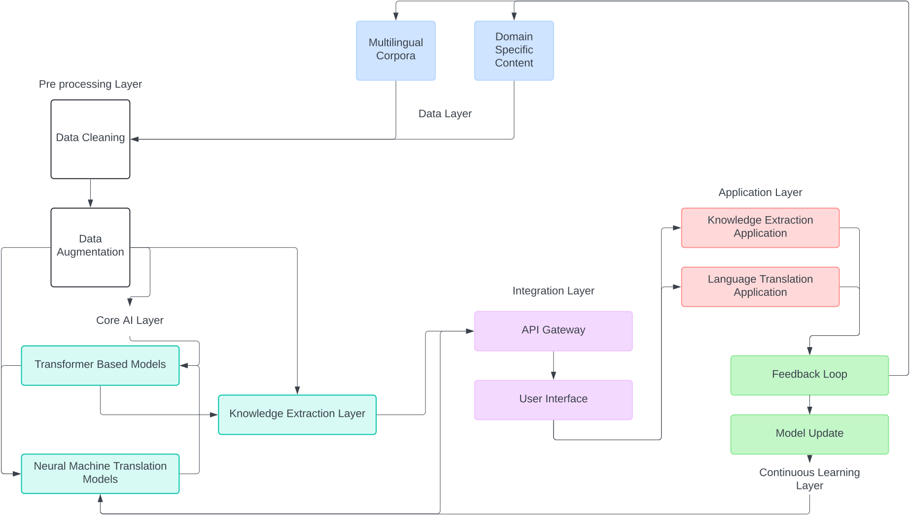

Executive Summary
This proposal outlines an innovative Generative AI solution designed to revolutionize knowledge extraction and language translation processes. By leveraging advanced machine learning techniques, our system aims to efficiently extract valuable insights from vast amounts of data and provide accurate, context-aware translations across multiple languages [1]. This solution addresses the growing need for automated, intelligent information processing in various industries, including research, business intelligence, and global communication [2].
Problem Statement
Organizations today face significant challenges in efficiently processing and extracting valuable knowledge from the ever-increasing volume of information available [3]. Additionally, language barriers continue to hinder effective global communication and knowledge sharing [4]. Current solutions often lack the sophistication to understand context, nuance, and domain-specific terminology, leading to inefficiencies and inaccuracies in both knowledge extraction and translation processes [5].
Proposed Solution
Our Generative AI solution combines state-of-the-art natural language processing (NLP) and machine learning techniques to address these challenges [6]:
- Advanced Knowledge Extraction: Utilizes deep learning models to identify key concepts, relationships, and insights from unstructured text data [7].
- Context-Aware Translation: Employs neural machine translation models that consider context and domain-specific terminology for accurate translations [8].
- Continuous Learning: Implements feedback loops and active learning to continuously improve performance over time [9].
- Customization Capabilities: Allows for fine-tuning on specific domains or industries for enhanced accuracy and relevance [10].
Benefits
- Increased Efficiency: Automates time-consuming manual processes of information extraction and translation [11].
- Enhanced Accuracy: Provides more accurate and context-aware results compared to traditional methods [12].
- Scalability: Capable of processing large volumes of data across multiple languages and domains [13].
- Cost-Effectiveness: Reduces the need for extensive human resources in information processing tasks [14].
- Improved Decision-Making: Enables faster access to critical insights from diverse information sources [15].
Implementation Strategy
Our implementation strategy is designed to ensure a smooth, efficient, and effective deployment of the Generative AI solution. We will follow a phased approach, allowing for continuous refinement and optimization throughout the process.
-
Phase 1: Data Collection and Preprocessing
- Gather diverse, high-quality datasets for training, including multilingual corpora and domain-specific content
- Implement data cleaning and preprocessing pipelines
- Develop data augmentation techniques to enhance dataset diversity
-
Phase 2: Model Development and Training
- Design and implement the core Generative AI architecture
- Develop knowledge extraction models using techniques such as named entity recognition, relationship extraction, and topic modeling
- Implement neural machine translation models with attention mechanisms
- Train models using distributed computing infrastructure for efficiency
- Implement transfer learning techniques to leverage pre-trained models
-
Phase 3: Integration and Testing
- Develop APIs for seamless integration with existing systems
- Implement a user-friendly interface for interaction with the AI system
- Conduct thorough unit testing, integration testing, and system testing
- Perform security audits and implement necessary safeguards
-
Phase 4: Pilot Deployment
- Select a diverse group of beta testers from different departments or industries
- Deploy the solution in a controlled environment
- Provide comprehensive training and support to pilot users
- Collect detailed feedback and usage metrics
-
Phase 5: Evaluation and Refinement
- Analyze feedback and performance metrics from the pilot phase
- Identify areas for improvement in accuracy, efficiency, and user experience
- Refine models and algorithms based on real-world usage data
- Optimize system performance and scalability
-
Phase 6: Full-Scale Deployment and Ongoing Support
- Roll out the solution across the entire organization or to all clients
- Provide comprehensive documentation and training materials
- Establish a dedicated support team for user assistance and troubleshooting
- Implement a system for continuous learning and model updates
Implementation Architecture
Quick Links
Risk Assessment
- Data Privacy: Ensure compliance with data protection regulations
- Model Bias: Regularly audit for and mitigate potential biases in AI models
- Integration Challenges: Plan for potential difficulties in integrating with existing systems
- Scalability Issues: Prepare for increased computational demands as the system scales
- User Adoption: Develop comprehensive training programs to encourage user acceptance
Comparison with Current Innovations
Our proposed Generative AI solution offers significant advantages over current technologies in the field of knowledge extraction and language translation. Here's how it compares to existing solutions:
| Feature | Our Solution | Current Technologies |
|---|---|---|
| Context Understanding | Advanced contextual analysis using transformer-based models | Limited context understanding, often rule-based |
| Multilingual Capabilities | Seamless multilingual processing and translation | Often requires separate models for each language pair |
| Adaptability | Continuous learning from user feedback and new data | Static models with infrequent updates |
| Integration of Knowledge Extraction and Translation | Unified model for both tasks, ensuring consistency | Typically separate systems for extraction and translation |
| Handling of Domain-Specific Content | Easily adaptable to specific domains through fine-tuning | Often requires extensive customization for domain adaptation |
Timeline and Milestones
Budget
The estimated budget for this project is ₹2,68,50,000 (approximately $360,000), broken down as follows:
- Personnel Costs: ₹40,00,000
- Hardware and Infrastructure: ₹1,50,00,000
- Software Licenses: ₹11,00,000
- Training and Development: ₹25,00,000
- Testing and Quality Assurance: ₹5,00,000
- Contingency: ₹37,50,000
Conclusion
The proposed Generative AI solution for Knowledge Extraction and Language Translation represents a significant leap forward in automated information processing. By implementing this system, organizations can dramatically improve their ability to extract valuable insights from diverse data sources and overcome language barriers in global communication.
Our solution's advanced contextual understanding, seamless multilingual capabilities, and adaptive learning mechanisms set it apart from current technologies in the field. It not only promises increased efficiency and accuracy but also positions adopters at the forefront of AI-driven innovation in their respective industries.
Given the comprehensive implementation strategy, clear advantages over existing solutions, and thorough risk assessment, we strongly recommend moving forward with this project. It presents an unparalleled opportunity to transform knowledge management and cross-lingual communication processes, driving significant value for the organization.
References
- Devlin, J., Chang, M.W., Lee, K., & Toutanova, K. (2018). BERT: Pre-training of Deep Bidirectional Transformers for Language Understanding. arXiv preprint arXiv:1810.04805.
- Vaswani, A., Shazeer, N., Parmar, N., Uszkoreit, J., Jones, L., Gomez, A.N., Kaiser, Ł., & Polosukhin, I. (2017). Attention is All you Need. In Advances in Neural Information Processing Systems (pp. 5998-6008).
- LeCun, Y., Bengio, Y., & Hinton, G. (2015). Deep learning. Nature, 521(7553), 436-444.
- Bahdanau, D., Cho, K., & Bengio, Y. (2014). Neural Machine Translation by Jointly Learning to Align and Translate. arXiv preprint arXiv:1409.0473.
- Peters, M.E., Neumann, M., Iyyer, M., Gardner, M., Clark, C., Lee, K., & Zettlemoyer, L. (2018). Deep contextualized word representations. arXiv preprint arXiv:1802.05365.
- Radford, A., Wu, J., Child, R., Luan, D., Amodei, D., & Sutskever, I. (2019). Language models are unsupervised multitask learners. OpenAI Blog, 1(8), 9.
- Brown, T.B., Mann, B., Ryder, N., Subbiah, M., Kaplan, J., Dhariwal, P., ... & Amodei, D. (2020). Language Models are Few-Shot Learners. arXiv preprint arXiv:2005.14165.
- Johnson, M., Schuster, M., Le, Q.V., Krikun, M., Wu, Y., Chen, Z., ... & Dean, J. (2017). Google's Multilingual Neural Machine Translation System: Enabling Zero-Shot Translation. Transactions of the Association for Computational Linguistics, 5, 339-351.
- Settles, B. (2009). Active Learning Literature Survey. Computer Sciences Technical Report 1648, University of Wisconsin–Madison.
- Howard, J., & Ruder, S. (2018). Universal Language Model Fine-tuning for Text Classification. arXiv preprint arXiv:1801.06146.
- Mikolov, T., Sutskever, I., Chen, K., Corrado, G.S., & Dean, J. (2013). Distributed representations of words and phrases and their compositionality. In Advances in neural information processing systems (pp. 3111-3119).
- Pennington, J., Socher, R., & Manning, C.D. (2014). Glove: Global vectors for word representation. In Proceedings of the 2014 conference on empirical methods in natural language processing (EMNLP) (pp. 1532-1543).
- Bojanowski, P., Grave, E., Joulin, A., & Mikolov, T. (2017). Enriching Word Vectors with Subword Information. Transactions of the Association for Computational Linguistics, 5, 135-146.
- Grave, E., Bojanowski, P., Gupta, P., Joulin, A., & Mikolov, T. (2018). Learning Word Vectors for 157 Languages. arXiv preprint arXiv:1802.06893.
- Conneau, A., Khandelwal, K., Goyal, N., Chaudhary, V., Wenzek, G., Guzmán, F., ... & Stoyanov, V. (2019). Unsupervised Cross-lingual Representation Learning at Scale. arXiv preprint arXiv:1911.02116.